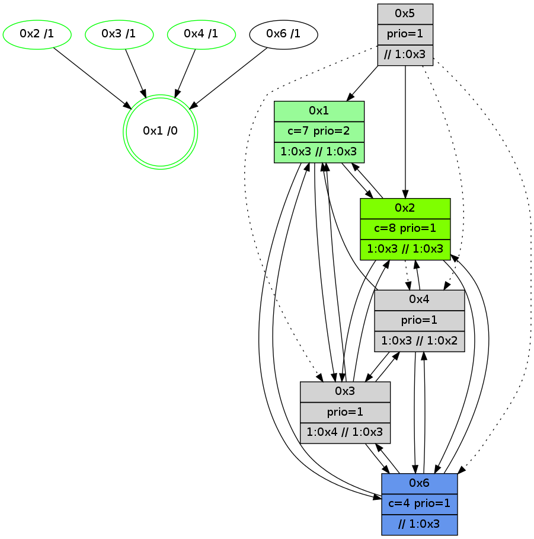

>> << IDX [start] -100 -25 -5 +0 +5 +25 +100 [905.136564016]
 Previous packets
----------------------------------------------------------------------
900.215477 beacon01(adaf) #0 coord=01,02,05,03,04,06 cycle=432.0ms assoc
-- color-indic=1 64 93 77
900.225439 beacon02(adaf) #0 coord=01,02,05,03,04,06 cycle=432.0ms assoc 64 c2 88
900.235440 beacon05(adaf) #0 coord=01,02,05,03,04,06 cycle=432.0ms assoc 64 64 a2
900.245438 beacon03(adaf) #0 coord=01,02,05,03,04,06 cycle=432.0ms assoc 64 f8 86
900.255439 beacon04(adaf) #0 coord=01,02,05,03,04,06 cycle=432.0ms assoc 64 5e ac
900.265440 beacon06(adaf) #0 coord=01,02,05,03,04,06 cycle=432.0ms assoc 64 2a b0
900.276992 [STC(6)->1 #0.106 to-color d=1]
900.279081 [STC(2)->1 #0.106 new-neigh,tree-change,inconsistent-stability,stable,to-color d=1]
900.280355 [Color(1) seq=131 @0:0 color=7 prio=2 >1.@2,1.@3,1.@5 >>1.@2,1.@3 c=1,4,6;0,2,3,5]
900.282838 [Hello(3): seq=703 sym=6,4,1,2 sysInfo=hasWarning stat=6:6,11,7,1/4:4,0,6,0/1:15,6,2,1/2:3,2,3,1]
900.285074 [Color(2) seq=103 @0:0 prio=1 >1.@3 c=4,7;0,1,2,5,6]
900.286610 [STC(3)->1 #0.106 new-neigh,tree-change,inconsistent-stability,stable,to-color d=1]
900.289215 [TreeStatus(3)-.->1 #0.106 new-neigh,tree-change,inconsistent-stability,stable child=1]
900.291370 [Color(3) seq=89 @0:0 prio=1 c=4,7;0,1,2,5,6]
900.292788 [STC(4)->1 #0.106 new-neigh,tree-change,inconsistent-stability,stable,to-color d=1]
900.295081 [Color(4) seq=71 @0:0 prio=1 >1.@3 c=7;1,4,6]
----------------------------------------------------------------------
900.707585 beacon01(adaf) #0 coord=01,02,05,03,04,06 cycle=432.0ms assoc
-- color-indic=1 64 df c7
900.717546 beacon02(adaf) #0 coord=01,02,05,03,04,06 cycle=432.0ms assoc 64 8e 38
900.727548 beacon05(adaf) #0 coord=01,02,05,03,04,06 cycle=432.0ms assoc 64 28 12
900.737548 beacon03(adaf) #0 coord=01,02,05,03,04,06 cycle=432.0ms assoc 64 b4 36
900.747547 beacon04(adaf) #0 coord=01,02,05,03,04,06 cycle=432.0ms assoc 64 12 1c
900.757546 beacon06(adaf) #0 coord=01,02,05,03,04,06 cycle=432.0ms assoc 64 66 00
900.769320 [Hello(4): seq=706 sym=2,1,3 asym=6 sysInfo=hasWarning stat=2:0,0,0,0/1:4,11,9,0/3:6,6,6,4/6:1,4,1,1]
900.773150 [Hello(6): seq=619 sym=4,2,1,3 sysInfo=hasWarning stat=4:1,3,2,0/2:1,2,2,1/1:5,1,6,1/3:2,3,1,1]
900.775095 [Hello(1): seq=605 sym=2,4,6,3 sysInfo=hasWarning,coloring-mode-on,ColoringModeRequestCalled stat=2:13,9,4,2/4:0,3,2,0/6:0,0,1,0/3:1,2,1,1]
900.776913 [TreeStatus(6)-.->1 #0.106 new-neigh,tree-change,inconsistent-stability child=1]
----------------------------------------------------------------------
901.199692 beacon01(adaf) #0 coord=01,02,05,03,04,06 cycle=432.0ms assoc
-- color-indic=1 64 1b a8
901.209653 beacon02(adaf) #0 coord=01,02,05,03,04,06 cycle=432.0ms assoc 64 4a 57
901.219654 beacon05(adaf) #0 coord=01,02,05,03,04,06 cycle=432.0ms assoc 64 ec 7d
901.229653 beacon03(adaf) #0 coord=01,02,05,03,04,06 cycle=432.0ms assoc 64 70 59
901.239655 beacon04(adaf) #0 coord=01,02,05,03,04,06 cycle=432.0ms assoc 64 d6 73
901.249654 beacon06(adaf) #0 coord=01,02,05,03,04,06 cycle=432.0ms assoc 64 a2 6f
901.261807 [Color(4) seq=72 @0:0 prio=1 >1.@3 c=7;1,4,6]
901.263832 [Color(1) seq=132 @0:0 color=7 prio=2 >1.@2,1.@3,1.@5 >>1.@2,1.@3 c=1,4,6;0,2,3,5]
901.265713 [Color(2) seq=104 @0:0 prio=1 >1.@3 c=4,7;0,1,2,5,6]
901.267573 [Hello(3): seq=704 sym=6,4,1,2 sysInfo=hasWarning stat=6:7,11,8,2/4:5,1,7,0/1:0,6,2,1/2:3,2,3,1]
901.271337 [Color(3) seq=90 @0:0 prio=1 >1.@2,1.@4 >>1.@2,1.@3,1.@5 c=4,7;0,1,2,5,6]
----------------------------------------------------------------------
901.691800 beacon01(adaf) #0 coord=01,02,05,03,04,06 cycle=432.0ms assoc
-- color-indic=1 64 56 af
901.701761 beacon02(adaf) #0 coord=01,02,05,03,04,06 cycle=432.0ms assoc 64 07 50
901.711761 beacon05(adaf) #0 coord=01,02,05,03,04,06 cycle=432.0ms assoc 64 a1 7a
901.721761 beacon03(adaf) #0 coord=01,02,05,03,04,06 cycle=432.0ms assoc 64 3d 5e
901.731762 beacon04(adaf) #0 coord=01,02,05,03,04,06 cycle=432.0ms assoc 64 9b 74
901.741762 beacon06(adaf) #0 coord=01,02,05,03,04,06 cycle=432.0ms assoc 64 ef 68
901.753275 [Hello(1): seq=606 sym=2,4,6,3 sysInfo=hasWarning,coloring-mode-on,ColoringModeRequestCalled stat=2:13,10,4,2/4:0,3,2,0/6:0,0,1,1/3:2,3,1,1]
901.757164 [Hello(4): seq=707 sym=2,1,6,3 sysInfo=hasWarning stat=2:0,1,0,0/1:5,12,9,0/6:2,4,1,2/3:7,7,6,4]
901.762584 [Hello(2): seq=1195 sym=6,1,3 asym=4 sysInfo=hasWarning stat=6:3,8,3,2/1:10,6,2,0/3:1,13,7,2/4:0,2,2,0]
----------------------------------------------------------------------
902.183907 beacon01(adaf) #0 coord=01,02,05,03,04,06 cycle=432.0ms assoc
-- color-indic=1 64 92 c0
902.193869 beacon02(adaf) #0 coord=01,02,05,03,04,06 cycle=432.0ms assoc 64 c3 3f
902.203869 beacon05(adaf) #0 coord=01,02,05,03,04,06 cycle=432.0ms assoc 64 65 15
902.213868 beacon03(adaf) #0 coord=01,02,05,03,04,06 cycle=432.0ms assoc 64 f9 31
902.223869 beacon04(adaf) #0 coord=01,02,05,03,04,06 cycle=432.0ms assoc 64 5f 1b
902.233870 beacon06(adaf) #0 coord=01,02,05,03,04,06 cycle=432.0ms assoc 64 2b 07
902.246065 [Color(4) seq=73 @0:0 prio=1 >1.@3 >>1.@2,1.@3,1.@4 c=7;1,4,6]
902.251035 [Color(1) seq=133 @0:0 color=7 prio=2 >1.@2,1.@3,1.@5 >>1.@2,1.@3,1.@4 c=1,4,6;0,2,3,5]
902.252980 [Color(3) seq=91 @0:0 prio=1 >1.@2,1.@4 >>1.@2,1.@3,1.@5 c=4,7;0,1,2,5,6]
----------------------------------------------------------------------
902.676018 beacon01(adaf) #0 coord=01,02,05,03,04,06 cycle=432.0ms assoc
-- color-indic=1 64 de 70
902.685978 beacon02(adaf) #0 coord=01,02,05,03,04,06 cycle=432.0ms assoc 64 8f 8f
902.695978 beacon05(adaf) #0 coord=01,02,05,03,04,06 cycle=432.0ms assoc 64 29 a5
902.705979 beacon03(adaf) #0 coord=01,02,05,03,04,06 cycle=432.0ms assoc 64 b5 81
902.715980 beacon04(adaf) #0 coord=01,02,05,03,04,06 cycle=432.0ms assoc 64 13 ab
902.725980 beacon06(adaf) #0 coord=01,02,05,03,04,06 cycle=432.0ms assoc 64 67 b7
902.737724 [Hello(4): seq=708 sym=2,1,6,3 sysInfo=hasWarning stat=2:1,1,0,0/1:5,13,9,0/6:2,4,1,2/3:8,8,6,4]
902.741412 [Hello(2): seq=1196 sym=6,1,3 asym=4 sysInfo=hasWarning stat=6:3,8,3,2/1:10,7,2,0/3:1,14,7,2/4:0,2,2,0]
902.745906 [Hello(1): seq=607 sym=2,4,6,3 sysInfo=hasWarning,coloring-mode-on,ColoringModeRequestCalled stat=2:14,10,4,2/4:0,3,2,0/6:1,0,1,1/3:2,4,1,1]
----------------------------------------------------------------------
903.168125 beacon01(adaf) #0 coord=01,02,05,03,04,06 cycle=432.0ms assoc
-- color-indic=1 64 1a 1f
903.178086 beacon02(adaf) #0 coord=01,02,05,03,04,06 cycle=432.0ms assoc 64 4b e0
903.188087 beacon05(adaf) #0 coord=01,02,05,03,04,06 cycle=432.0ms assoc 64 ed ca
903.198088 beacon03(adaf) #0 coord=01,02,05,03,04,06 cycle=432.0ms assoc 64 71 ee
903.208088 beacon04(adaf) #0 coord=01,02,05,03,04,06 cycle=432.0ms assoc 64 d7 c4
903.218087 beacon06(adaf) #0 coord=01,02,05,03,04,06 cycle=432.0ms assoc 64 a3 d8
903.230289 [Color(4) seq=74 @0:0 prio=1 >1.@3 >>1.@2,1.@3,1.@4 c=7;1,4,6]
903.232345 [Hello(3): seq=706 sym=6,4,1,2 sysInfo=hasWarning stat=6:9,11,8,2/4:5,1,7,0/1:2,6,2,1/2:5,2,3,1]
903.235478 [Color(3) seq=92 @0:0 prio=1 >1.@2,1.@4 >>1.@2,1.@3,1.@5 c=4,7;0,1,2,5,6]
903.239452 [Color(2) seq=106 @0:0 color=8 prio=1 >1.@3 >>1.@3,1.@4,1.@5 c=4,7;0,1,2,5,6]
903.244481 [Color(1) seq=134 @0:0 color=7 prio=2 >1.@2,1.@3,1.@5 >>1.@2,1.@3,1.@4 c=1,4,6;0,2,3,5]
----------------------------------------------------------------------
903.660234 beacon01(adaf) #0 coord=01,02,05,03,04,06 cycle=432.0ms assoc
-- color-indic=1 64 44 7e
903.670194 beacon02(adaf) #0 coord=01,02,05,03,04,06 cycle=432.0ms assoc 64 15 81
903.680195 beacon05(adaf) #0 coord=01,02,05,03,04,06 cycle=432.0ms assoc 64 b3 ab
903.690196 beacon03(adaf) #0 coord=01,02,05,03,04,06 cycle=432.0ms assoc 64 2f 8f
903.700196 beacon04(adaf) #0 coord=01,02,05,03,04,06 cycle=432.0ms assoc 64 89 a5
903.710196 beacon06(adaf) #0 coord=01,02,05,03,04,06 cycle=432.0ms assoc 64 fd b9
903.721076 [Hello(1): seq=608 sym=2,4,6,3 sysInfo=hasWarning,coloring-mode-on,ColoringModeRequestCalled stat=2:14,10,4,2/4:0,3,2,0/6:1,0,1,1/3:2,4,1,1]
903.723756 [Color(5) seq=52 @0:0 prio=1 >>1.@3,1.@5 c=1,7,8;0,2,3,4,5,6]
903.725592 [Hello(4): seq=709 sym=2,1,6,3 sysInfo=hasWarning stat=2:2,2,0,0/1:6,14,9,0/6:2,4,1,2/3:9,9,6,4]
903.727372 [Hello(2): seq=1197 sym=6,1,3 asym=4 sysInfo=hasWarning stat=6:3,8,3,2/1:11,8,2,0/3:1,14,7,2/4:0,2,2,0]
----------------------------------------------------------------------
904.152344 beacon01(adaf) #0 coord=01,02,05,03,04,06 cycle=432.0ms assoc
-- color-indic=1 64 80 11
904.162304 beacon02(adaf) #0 coord=01,02,05,03,04,06 cycle=432.0ms assoc 64 d1 ee
904.172306 beacon05(adaf) #0 coord=01,02,05,03,04,06 cycle=432.0ms assoc 64 77 c4
904.182305 beacon03(adaf) #0 coord=01,02,05,03,04,06 cycle=432.0ms assoc 64 eb e0
904.192307 beacon04(adaf) #0 coord=01,02,05,03,04,06 cycle=432.0ms assoc 64 4d ca
904.202306 beacon06(adaf) #0 coord=01,02,05,03,04,06 cycle=432.0ms assoc 64 39 d6
904.214499 [Color(4) seq=75 @0:0 prio=1 >1.@3 >>1.@2,1.@3,1.@4 c=7;1,4,6]
904.216536 [Hello(3): seq=707 sym=6,4,1,2 sysInfo=hasWarning stat=6:10,11,8,2/4:5,1,7,0/1:3,7,2,1/2:6,3,3,1]
904.219670 [Color(3) seq=93 @0:0 prio=1 >1.@4 >>1.@3,1.@5 c=4,7,8;0,1,2,5,6]
904.221556 [Color(1) seq=135 @0:0 color=7 prio=2 >1.@3,1.@5 >>1.@3,1.@4 c=1,4,6;0,2,3,5,8]
904.223672 [Color(2) seq=107 @0:0 color=8 prio=1 >1.@3 >>1.@3,1.@4,1.@5 c=4,7;0,1,2,5,6]
----------------------------------------------------------------------
904.644453 beacon01(adaf) #0 coord=01,02,05,03,04,06 cycle=432.0ms assoc
-- color-indic=1 64 cc a1
904.654414 beacon02(adaf) #0 coord=01,02,05,03,04,06 cycle=432.0ms assoc 64 9d 5e
904.664413 beacon05(adaf) #0 coord=01,02,05,03,04,06 cycle=432.0ms assoc 64 3b 74
904.674414 beacon03(adaf) #0 coord=01,02,05,03,04,06 cycle=432.0ms assoc 64 a7 50
904.684415 beacon04(adaf) #0 coord=01,02,05,03,04,06 cycle=432.0ms assoc 64 01 7a
904.694415 beacon06(adaf) #0 coord=01,02,05,03,04,06 cycle=432.0ms assoc 64 75 66
904.706180 [Hello(4): seq=710 sym=2,1,6,3 sysInfo=hasWarning stat=2:3,3,0,0/1:6,15,9,0/6:2,4,1,2/3:10,10,6,4]
904.708593 [Hello(1): seq=609 sym=2,6,3 sysInfo=hasWarning,coloring-mode-on,ColoringModeRequestCalled stat=2:15,11,4,2/6:2,0,1,1/3:2,4,1,1]
904.710642 [STC(1) #0.108 new-neigh,tree-change,inconsistent-stability,stable,to-color d=0]